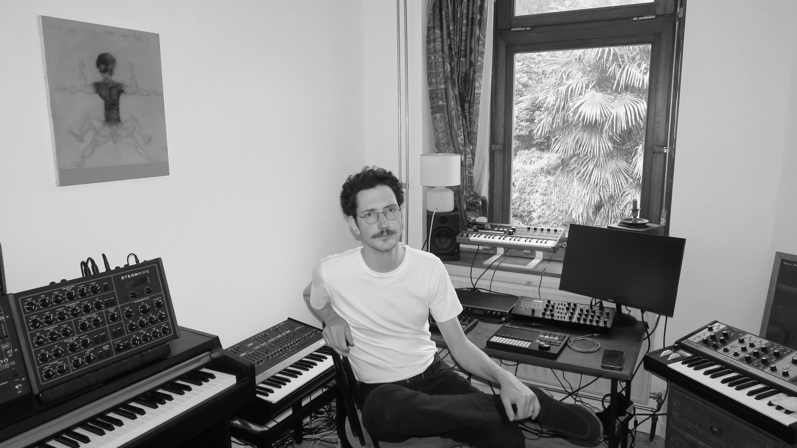

Independent platform for music by Jonathan Lejeune.
Electroacoustic composition, algorithmic electronics,
ambient music and contemporary piano works.
ELINE — Electroacoustic / Ambient
JOHN JAW — Algorithmic / IDM
J. LEJEUNE — Piano / Neo-classical
Managed via CMS
Concerts & performances
Experiments, sketches, fragments

Rose Ether Electronics gathers works composed, performed and released by Jonathan Lejeune.
Across electroacoustic music, algorithmic electronics and piano composition, the different projects share an interest in sound as material, structure and presence.
Contact: jonlejeune96@gmail.com